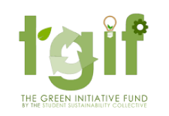

Thanks to our sponsors

Inspiring lifelong learning through underwater robotics
Learn MoreOur goal is to be the first undergraduate group of students to design a 3D printed, low cost, modular, and fully Autonomous Underwater Vehicle (AUV) for oceanographic and climate change research.
Check Our ProgressWe are a team of ambitious undergraduate engineering students at UC San Diego who are passionate about sustainability and robotics. We’re always looking for new individuals to work with us!
Apply HereScientists studying glaciers need to get very close to collect analyzable data. However, calving events are incredibly dangerous, making it impossible to get close by boat. As a result, AUV’s have recently boomed in popularity because they are fully autonomous and are able gather high quality data with minimal resources. However, they are incredibly expensive, ranging from $10,000 to millions.
Yonder Deep’s primary goal is to make a low-cost, fully customizable AUV in order to revolutionize oceangraphic research.